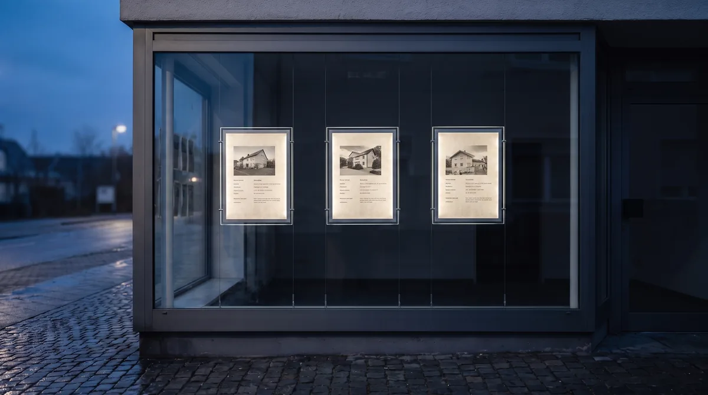
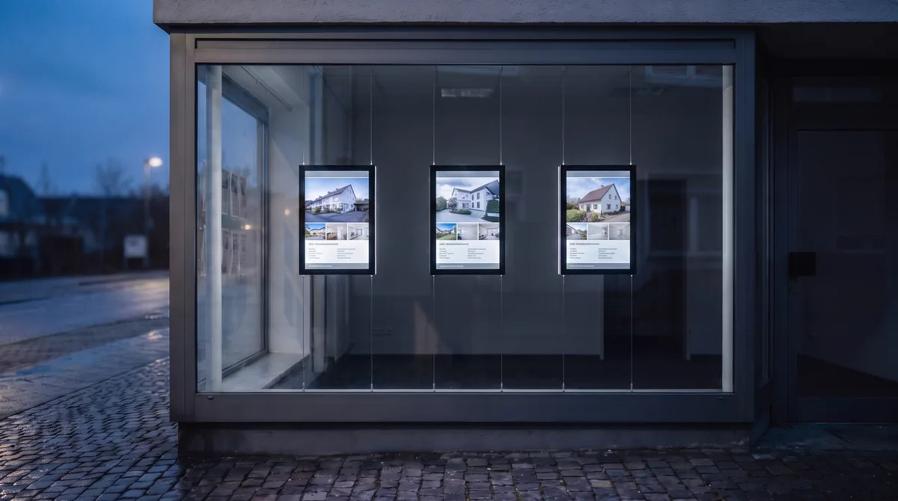

Ihr Leuchtrahmen leuchtet. Aktuell ist er trotzdem nicht.
Digitale Immobilien-Displays statt gedruckter Folie. Ihre Objekte kommen automatisch aus onOffice, Propstack und weiteren Maklersystemen. Kein Druck, kein Folienwechsel, kein verkauftes Objekt im Fenster.
Wir zeigen Ihnen, wie ESYSYNC bei Ihnen wirken kann. Unverbindlich, in 15 Minuten.
Im Einsatz bei Volksbanken, Sparkassen, REMAX, KENSINGTON und führenden Maklerbüros. Hergestellt in Bremen.
Der Rahmen war der halbe Schritt.
Ein hinterleuchteter Rahmen sieht deutlich besser aus als ein Zettel mit Klebestreifen, keine Frage. Nur ändert er nichts daran, was in ihm steckt: ein gedrucktes Blatt Papier, das jemand von Hand tauschen muss.
Ihr Schaufenster ist beleuchtet. Ihre Objektdaten sind es nicht.
Jedes neue Objekt beginnt mit einem Druckauftrag. Layout, Druck, Zuschnitt.
Folie wechseln heißt hinfahren, Rahmen öffnen, tauschen. Pro Standort, pro Objekt.
Der Preis ändert sich in Ihrem System. Im Fenster steht weiter der alte.
Verkauft bleibt hängen, bis jemand Zeit hat, die Folie zu ziehen.
Zehn Standorte heißen zehn Wege. Jedes Mal, wenn sich etwas ändert.
Ein Rahmen zeigt ein Objekt. Mehr Auswahl heißt mehr Rahmen.
Von außen kaum zu unterscheiden. Im Arbeitsalltag zwei Welten.
Beide leuchten. Beide sehen abends gut aus. Der Unterschied liegt darin, wer die Inhalte pflegt: bei der Folie Sie, beim Display Ihr Maklersystem.


Beide Aufnahmen zeigen dasselbe Schaufenster aus derselben Position. Symbolbilder.
Folie und Display im Arbeitsalltag.
Ohne Schönfärberei. Ein Leuchtrahmen hat Vorteile, die wir hier auch so benennen.
| Situation | Leuchtrahmen mit Folie | ESYSYNC |
|---|---|---|
| Neues Objekt zeigen | Layout anlegen, drucken, zum Standort fahren, Rahmen öffnen, einlegen | Erscheint automatisch, sobald es im Maklersystem steht |
| Preis ändert sich | Neue Folie drucken und tauschen | Ändert sich im Display mit, ohne Ihr Zutun |
| Objekt ist verkauft | Bleibt sichtbar, bis jemand vor Ort die Folie zieht | Verschwindet automatisch beim Statuswechsel |
| Mehrere Standorte | Ein Druck und ein Weg pro Standort | Alle Standorte zentral aus einem Konto |
| Wie viel passt ins Fenster | Ein Objekt pro Rahmen | Mehrere Objekte im automatischen Wechsel, auf Wunsch mit Video |
| Laufende Kosten | Druck und Arbeitszeit, fallen bei jeder Änderung neu an | Fester Monatspreis pro Standort, ab 39 € netto |
| Sichtbarkeit bei Dunkelheit | Gut. Genau dafür ist der Rahmen gebaut. | Gut, dazu 1000 Nits für hohe Leuchtkraft im Hellen wie im Dunkeln |
| Technik im Fenster | Wenig. Leuchtmittel und Rahmen, sonst nichts. | Displays mit Fernwartung, 24 Monate Herstellergarantie |
Vergleich der Produktkategorien, nicht eines bestimmten Anbieters. Angaben zu ESYSYNC nach Herstellerstand.

Wir bauen die Hardware selbst. Und kümmern uns danach.
ESYSYNC kommt von AVANTO aus Bremen. Wir entwickeln und produzieren die Displays selbst, seit über zehn Jahren im Bereich digitale Immobilienpräsentation. Hardware, Software, Automatisierung und Service kommen aus einer Hand. Wenn etwas ist, rufen Sie nicht bei einem Zwischenhändler an.
- Ein Hersteller, ein System, ein Ansprechpartner. Entwicklung, Software, Automatisierung und Service greifen bei uns nahtlos ineinander, statt verteilt auf Hersteller, Importeur und Händler zu liegen.
- Fernwartung statt Ortstermin. Die meisten Störungen lösen wir aus der Ferne. Bei Bedarf tauschen wir Komponenten.
- Entwickelt für Immobilien, gemacht für den Dauerbetrieb. Lichtstarke Displays, ausgelegt für den professionellen Dauerbetrieb hinter Glas. Inklusive 24 Monaten Herstellergarantie.
- Planungssicherheit mit klarer Laufzeit. Erstlaufzeit 24 Monate, danach Verlängerung um jeweils 12 Monate. Transparent, planbar, ohne überraschende Vertragsbedingungen.
- Made in Germany, Hosting in Deutschland. SaaS auf AWS mit Serverstandort Deutschland.
Sie haben schon etwas hängen. Was passiert damit?
Der häufigste Grund, den Wechsel zu schieben, ist die Sorge vor Aufwand und vor Hardware, die man gerade erst angeschafft hat. Beides schauen wir uns vorher an, nicht hinterher.
Bestand aufnehmen.
In der Demo gehen wir Ihre Standorte durch: Fenstergröße, vorhandene Aufhängung, wie viele Objekte Sie zeigen wollen. Daraus kommt ein konkretes Angebot, kein Katalogpreis.
Vorhandene Bildschirme mitnehmen.
Wenn Sie bereits Monitore im Einsatz haben, lassen die sich oft über die ESYSYNC Playerbox einbinden. Den Mehrwert bringt ohnehin die zentrale Steuerung, nicht das Gehäuse.
Montieren und verbinden.
Die Displays werden schlüsselfertig geliefert und sind in rund 90 Minuten pro Standort selbst montiert. Die Schnittstelle richten wir gemeinsam in einem Einrichtungstermin ein, danach gehen Sie online.
Banken, Sparkassen und führende Makler zeigen schon digital.
„Wir sind begeistert vom modernen Erscheinungsbild und der einfachen Bedienung.“

„Perfektes Handling, freundlicher Support. So muss digitale Zusammenarbeit laufen.“

Was kostet der Wechsel?
ESYSYNC besteht aus zwei Bausteinen: der Software für die zentrale Steuerung und der passenden Display-Hardware. Die Software startet bei 39 € netto pro Monat. Displays, Einrichtung und zusätzliche Funktionen werden passend zur Anzahl Ihrer Standorte, Screens und gewünschten Automatisierungen zusammengestellt.
Was Umsteiger uns vorher fragen.
Was ist der Unterschied zwischen einem Leuchtrahmen und einem digitalen Display?
Im Leuchtrahmen steckt ein gedrucktes Blatt, das von hinten beleuchtet wird. Der Inhalt ändert sich nur, wenn jemand die Folie tauscht. Ein digitales Display bezieht seinen Inhalt aus Ihrem Maklersystem: neue Objekte erscheinen automatisch, Preisänderungen laufen mit, verkaufte Objekte verschwinden von selbst.
Können wir unsere vorhandenen Rahmen oder Bildschirme weiter nutzen?
Vorhandene Bildschirme lassen sich häufig über die ESYSYNC Playerbox einbinden. Ob und wie Ihre bestehende Aufhängung nutzbar ist, sehen wir uns in der Demo an Ihren konkreten Standorten an. Ein pauschales Ja oder Nein wäre unseriös.
Wie kommen die Objekte auf das Display?
Automatisch über die OpenImmo-Schnittstelle aus onOffice, Propstack und weiteren Maklersystemen. Alternativ per Drag-and-Drop in der Web-App. Sie pflegen Ihre Objekte weiterhin nur an einer Stelle, nämlich dort, wo Sie es heute schon tun.
Sind die Displays bei Sonnenlicht lesbar?
Ja. ESYSYNC-Displays erreichen 1000 Nits und damit hohe Leuchtkraft für gute Sichtbarkeit bei Tag und Nacht. Ein hinterleuchteter Rahmen ist bei Dunkelheit ebenfalls gut sichtbar, bleibt aber ein gedrucktes Blatt.
Wie aufwendig ist die Montage?
Die Displays kommen schlüsselfertig zu Ihnen und sind in rund 90 Minuten pro Standort selbst montiert. Die Schnittstelle richten wir gemeinsam in einem Einrichtungstermin ein.
Wer kümmert sich, wenn etwas ausfällt?
Wir. ESYSYNC kommt von AVANTO aus Bremen, wir sind Hersteller und Servicepartner in einem. Die meisten Störungen lösen wir per Fernwartung, bei Bedarf tauschen wir Komponenten. Auf die Hardware geben wir 24 Monate Herstellergarantie.
Wie lange bin ich gebunden?
Die Erstlaufzeit beträgt 24 Monate. Anschließend verlängert sich der Vertrag jeweils um 12 Monate. Transparent, planbar und ohne überraschende Vertragsbedingungen.
Kann ich mehrere Filialen zentral verwalten?
Ja. Alle Standorte laufen über ein Konto. Passend für Franchise-Gruppen und Filialnetze von Banken und Sparkassen.
Sehen Sie den Unterschied in einer kurzen Demo.
Wir zeigen Ihnen, wie ESYSYNC bei Ihnen wirken kann. Unverbindlich und in 15 Minuten.